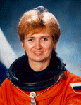

Lyndon B. Johnson Space Center
Houston, Texas 77058
|
National Aeronautics and Space Administration Lyndon B. Johnson Space Center Houston, Texas 77058 |
 |
Biographical Data |
||
Elena V. Kondakova
Russian Cosmonaut
PERSONAL DATA: Born March 30, 1957, in Mitischi, Moscow Region. Married to Valerii V. Ryumin, born 1939 in Komsomolskna-Amure, Kharbarovsk Region, Russia. They have one child. Kondakova enjoys the theater, river fishing, reading, traveling. Her father, Vladimir A. Kondakov and her mother, Klavdiya S. Kondakova (Morozova), reside in Kaliningrad, Moscow Region. His parents, Viktor N. Ryumin and Alexandra F. Ryumina (Podporina), are deceased
EDUCATION: Graduated from Moscow Bauman High Technical College in 1980
SPECIAL HONORS: Hero of Russia
EXPERIENCE: Upon graduation, in 1980, Kondakova started to work in RSC-Energia completing science projects, experiments and research work. Then in 1989 she was selected as a cosmonaut candidate by RSC-Energia Main Design Bureau and sent to Gagarin Cosmonaut Training Center to start the course of general space training. After finishing the course in March, 1990, Kondakova was qualified as "test cosmonaut". From January through June of 1994, she was under training for the 17th main mission and "Euromir-94" flight as a flight engineer of the prime crew. October 4, 1994 through March 22, 1995, she fulfilled her first flight on board the spacecraft "Soyuz TM-17" and the orbital complex "Mir" as a flight engineer of the 17th main mission. She spent 169 days in space, including 5 days with NASA Astronaut Norman Thagard. The program included a month long joint flight with German Astronaut Ulf Merbold. Most recently, she was a mission specialist on STS-84 (May 15-24, 1997), NASA's sixth Shuttle mission to rendezvous and dock with the Russian Space Station Mir. Mission duration was 9 days, 5 hours and 20 minutes. In completing her second flight, Kondakova has logged over 178 days in space.
JULY 1997
{kind=link}